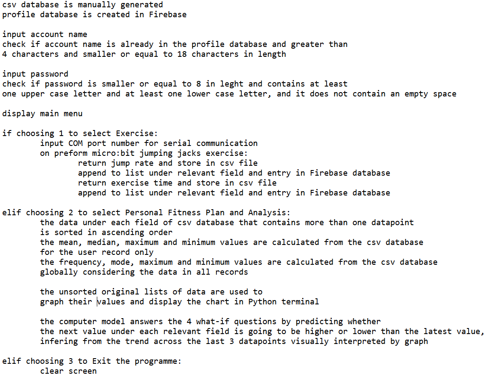

I commenced my investigation by researching the existing solutions applicable to fitness trackers and sensors, such as the Fitbit fitness watch that evaluates a user's fitness level based on data it gathers by an input device similar to a micro:bit “shake” sensor. Then, I have considered the various smartphone based applications like Google Fit storing the user’s exercise timings and scores in its “workout history” and MyFitnessPal that gives advice on the user's current exercise routine.
The other two alternative project ideas I have considered were the air quality sensor and analyser as well as a task master that would record the tasks one needs to do in a day and motivate them to set SMART (Specific, Measurable, Achievable, Relevant, and Time-Bound) goals, that would improve their mental well-being and reduce procrastination in users.
I choose to settle on the fitness and exercise tracker as:
To record the level of pollution in air accurately is very difficult, and due to the fact that my school had only the basic micro:bit available to make such measurements this was impossible, since to do this, micro:bit "MonkMakes" CO2 extension is needed. The analysis of such data would also be quite complicated.
The task master project was, as I felt, too restrictive in its scope, and would not have allowed me to collect enough data to form a viable database. This was an obstacle I came across only after starting to plan the necessary architecture in the first week of the coursework.
I have examined the existing need for an exercise tracker by conducting a short survey with a total of 104 respondents from my school, including both the students and the staff members to determine how frequently they exercise, and whether or not they want to be motivated to exercise more. The results, organised by the age brackets adopted from the most recent World Health Organization age group categorisation (adolescents, adults and older adults) revealed that 31.1% of respondents claimed that their exercise routine “needs improvement", and that overwhelming 71.8% have regarded themselves as “motivated” to do exercise. This project would then target those other 28.2% who’s exercise routine is poor and are unmotivated to conduct exercise at the detriment to their well-being.
Plan And Design
In terms of software, I decided to write the code of the artefact using Python as programming language, and Thonny as editor. Additionally, I utilised micro:bit MakeCode Integrated Development Environment (IDE) to use "blocks" to make programming of micro:bit an easy to follow process. The hardware I decided to use was micro:bit embedded system technology, using LED lights and programmable buttons as well as USB port. The critical hardware component I used in micro:bit was the "shake" sensor, providing a way to measure and determine the fitness level of the user through counting the number of times it has been activated, representative of the number of jumping jacks performed by the user. This ability to record and measure user's exercise performance is critical for meeting the user's needs in terms of improving their physical well-being through exercise.
Pseudocode

Flowchart
Planning By Requirements
The artefact was designed to function as follows:
A database stored in a csv file containing "previous user's" with manually generated accounts and details, to make the analysis and comparison easy to demonstrate.
The artefact was planned to be an automated embedded system: Once the code is run it will automatically prompt the user to enter different inputs, such as their username and password, as well as other descriptive features of wellbeing like perceived exertion as well as energy level and mood score recorded after the exercise, that are also validated using try-except blocks to handle errors.
Exercise is executed using micro:bit - the user enters micro:bit's COM port number and connects to it, jumps (recognised by "shake" sensor) and presses button A when finished. The timing of the exercise and the number of "jumps" or shakes are recorded and inserted into a list in the csv file database under the user's record.
The programme was planned to then transform the raw data by analysing it, finding mean, mode, median and frequency values of the user's performance. It visualises the processed data in graphical form of a pie chart and a line graph.
Then, the programme models this data, predicting whether the next exercise result will be higher or lower than the last one by splitting the list into two groups of items. I would then get a mean of each group and compare them to make the inference.
Lastly, the programme makes a suggestion of the number of weeks a user should anticipate to have to exercise using the programme until getting fit, taking into account their age, time spent exercising, their expectations and, of course, their exercise results by answering the 4 "what-if" questions, thus meeting the brief.
Create
Project Diary
Below is the timeline of the work that was carried out, reported every fortnight and listed in a chronological order:
Weeks 4th - 17th December 2023:
Created a dataset in Python, using csv file to store manually entered data.
Declared a number of lists containing individual data points relevant to a specific record and field.
The block of code used for either a "Sign In" or to "Register" a new user is validated using try-except for the ValueError, TypeError and AssertionError.
Weeks 18th December 2023 - 14 January 2024 (excluding Christmas holidays):
Created variables "JumpRate" and "TotalTime" in micro:bit MakeCode IDE to record the number of jumps preformed per minute and the total time spent exercising in a session.
Converted "TotalTime" from seconds to minutes and stored it in the csv file by adding it to the sum of time spent exercising.
Created a prompt inputting Micro:bit 's COM port number to establish serial communication between the user's computer and the micro:bit.
Weeks 15th-28th January 2024:
Wrote code to calculate the mean, median, maximum and minimum values to analyse of user's data.
Created a display using print statements and by calling functions such as “printMean()” and printMaximum()”, independent of functions like “mean()” and “maximum()” that are kept separate so that their value can be returned back to the caller.
Calculated mode programmatically, i.e. the greatest number of jumps preformed by the user.
Weeks 29h January - 11th February 2024:
Completed my first “what-if” question: “What if the user's mean score is below medium level of difficulty, or above medium level of difficulty but below the advanced level, or at or above the advanced level of difficulty?” - based on the user's mean jump rate, maximum score and total time spent exercising the amount of weeks needed to exercise until reaching fitness is determined.
Finished coding second “What-if” question asking: “What if the user's mean score is below their expectations, or equal to or above their expectations and to what extent?”, scrutinising user’s expectations and giving constructive mental health criticism and advice on the basis of unrealistic physical health expectations that data analysis proved wrong.
Weeks 12th February - 3rd March 2024 (excluding mid-term break):
Completed the code for the third “what-if" question, asking: “What if the user's age is below 20, above 20 to 40 or above 40? How will age reflect on their exertion levels?”. The question examines user's age and their perceived exertion after exercise - something crucially important to help older users prevent gaining an injury while exercising.
The fourth “what-if" question stated: “What if the user's mean and median mood score together with their average reported energy level is high or low, and what are the implications on the user's ability to perform the exercise?”, and is answered by modelling the “timeNeededToGetFit” variable so as to increase it by 1 week if the user’s energy level and mood score are low and vice versa, in order to allow the user to decrease exercise intensity and thus prevent overexertion.
Weeks 4th-19th March 2024:
Created “findTrend()” function to predict whether the next exercise result will be higher or lower then the latest kept in the database.
Declared a function “motivation()” to compare a user's maximum result (mode) with that of the database, informing the user of the difference between them, motivating them to compete with other theoretical users and hence become fit faster.
The processed data is interpreted graphically by a pie chart and a line graph.
Created a while loop to return to the earlier block of code to allow user to exercise again or choose to exit the programme.
Problem I Managed To Resolve
One of the most challenging puzzles I have confronted while working on this project and developing the artefact was making the programme to ask the user whether they wanted to exercise again. This was in my opinion, a crucial aspect of the artefact, as it allowed the “replayability” of the programme that could build further the initially manually generated database and develop more accurate analysis conclusions.
To overcome this issue, I used an input prompt statement in which the user could select whether “1” to exit the programme, or “2” to exercise again. While I initially struggled to find a way around this, I discovered that if I indented all of the lines of code equally so that they belong to a single while loop that contains the instructions for exercising using the micro:bit and I impose a rule that it runs while “e == 0”, then by simply echoing that “e = 0” at the end of the programme loops us back to the start of the while loop, and we can exercise again and so infinitely many times. By entering “2”, we exit the loop and terminate the programme.
Solving this problem was the most significant example of iteration stage in the development of my artefact, as the solution required coming back from the end of the programme to its very beginning and creating a comprehensive loop that allows for the code itself to be iterated over many times in action.
Outline of a Significant Block of Code
Mean Exercise Score compared to suggested Level of Exercise Difficulty
The code above is my response to the “what if” question which asks: “What if the user's mean score is below medium level of difficulty, or above medium level of difficulty but below the advanced level, or at or above the advanced level of difficulty?”
Thus, I have set out to create a large logic branch of “if/elif” statements that are used to navigate through different scenarios of various possible mean exercise scores. Namely, the code is broken down into three main parts:
1. Assigning fixed reference values to Levels of Difficulty and establishing the parameters/arguments (image below)
2. Comparing the mean jump rate (mean of all exercise scores for that user) with each level of difficulty as an individual possibility (image below)
In each case, the fitness recommendation is by default assigned a value of 12 weeks, as this is the normal amount of time by which most people will become physically fit and benefit from it in terms of long term health improvements. This is reduced to 8 and then 3 as the mean exercise result gets higher, indicating a user who has already been physically active before, thus requiring less time using the programme until getting fit.
3. The maximum or the highest value for the number of jumps per minute that the user has achieved so far is compared to the different levels of difficulty (image below)
The maximum value comparison shows the potential of the user, and gives them motivation to pursue the hardest level of difficulty that they can practise without injury as their target while staying within the realistic and educated boundaries based on the data analysis and the already existing values.
Unit Testing
I have used unit testing to test the functionality and outcome of functions specifically designed for statistical analysis of raw data store in the csv file database, i.e. mean, median, minimum and maximum value, all performed in a separate file called "ComputerScienceProject_UnitTesting" that imports the functions tested from the artefact file. These blocks of code were tested in terms of the calculations that they make on a list of positive integers against the manually calculated expected result, using "Triple-A-Model" (Arrange, Act and Assert) to organise my tests. The testing showed me that the artefact works successfully, as the results of all unit tests when run are "OK" with 0 "FAILS". Therefore, I have ensured that my artefact is fully autonomous and is free of any bugs I could detect.
Evaluation
The initial design of the artefact planned through a short pseudocode above was a useful way for me to stay efficient and not waste time, leading me to use abstraction to phase out irrelevant details and concepts not fundamental to answering the brief, making my project concise and focused. The way that the flowchart has clearly through decomposition broken down the large task of meeting the brief into smaller, more manageable problems made me confident at writing code in a clear and organised way.
The end-user's need for forming a regular exercise routine that would boost their physical well-being was fully met, with the artefact helping user's to track the trend across their exercise performances. The personalised suggestions at the end of the programme specified according to the user's age, how fast they wish to get fit and their previous exercise scores now form a fitness routine to cater for the unique needs of the user. In conclusion, my initial objectives of creating a fully autonomous fitness tracking artefact through validating, storing, analysing and graphically visualising user’s exercise data, while making predictions that are beneficial to user's well-being are satisfied. Therefore, I feel the task set out in the brief has been carried out successfully and is fully achieved.
Still, there are few main areas where I could improve my code:
Firstly, I would refine code to allow for greater testability, as currently only the mean, median, maximum and minimum values are involved in operations involving calculations that can be unit tested.
Secondly, if I were to iterate through the entire project, I would store the user's data using cloud storage, as csv files can be accessed only from a single device. I could achieve this using Firebase or Microsoft Access database and by using dictionaries to communicate the input data from the programme to the database.
Additionally, the limitations of the micro:bit hardware produced a small delay when counting the number of shakes, making the overall jump count inaccurate for scientific testing. I would rectify this by using a more sensitive shake sensor device, like a FitBit watch.
Lastly, I would like to gather some non-numeric data points for analysis, as mode and frequency measures of analysis did poorly at interpreting numeric values.
References
The Bibliography of Scholarly Articles used during Investigation:
Elder A, Guillen G, Isip R, Zepeda R, Lewis ZH. A Deeper Look into Exercise Intensity Tracking through Mobile Applications: A Brief Report. Technologies. 2023; 11(3):66.
Guo Y, Bian J, Leavitt T, et al. Assessing the Quality of Mobile Exercise Apps Based on the American College of Sports Medicine Guidelines: A Reliable and Valid Scoring Instrument. J Med Internet Res. 2017;19(3):e67. Published 2017 Mar 7. doi:10.2196/jmir.6976
Wu, Y., Yu, L., Xu, J., Deng, D., Wang, J., Xie, X., ... & Wu, Y. (2023, October). AR-Enhanced Workouts: Exploring Visual Cues for At-Home Workout Videos in AR Environment. In Proceedings of the 36th Annual ACM Symposium on User Interface Software and Technology (pp. 1-15).
Other references relevant to the investigation of Existing Solutions and chooisng Jumping Jacks as the mode of exercise:
Further Context and Current Solutions - I have researched the most popular health and fitness apps in Ireland such as MyFitnessPal and FitBit to give me further context relevant to the brief
The Fitness Questionnaire I have used to Investigate user needs and the data gathered:
Questionnaire - A survey made to collect data on general population fitness in my school. (see Appendix A)
Google Sheets Database of Responses - Results from 104 teachers and students who have specified their needs as potential users in terms of physical exercise
The list of online tutorials and websites that have helped me refresh my mind and learn more: